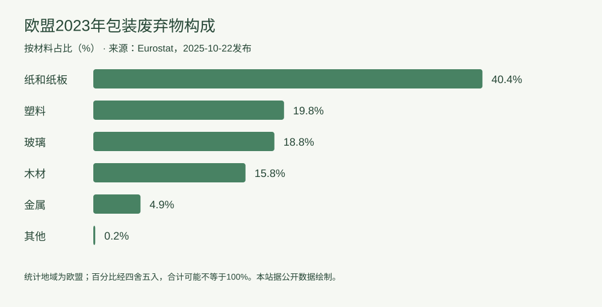

行业动态
数据读图：欧盟包装废弃物中，纸和纸板占多少？
2026-10-10 · 印个泡泡
据Eurostat已发布的2023年数据，区分材料占比与回收率的不同含义。
**资料时间说明：**本文于2026年10月10日发布，解读Eurostat在2025年10月22日公布的2023年统计，不是当天新增统计。

图：本站依据Eurostat公开数据绘制，单位为百分比。统计覆盖欧盟经济活动中的包装废弃物，不局限于居民家庭。
| 观察指标 | 2023年数据 | 指标口径 |
|---|---|---|
| 包装废弃物总量 | 7970万吨 | 欧盟各类包装废弃物 |
| 人均包装废弃物 | 177.8千克 | 按人口折算 |
| 纸和纸板占比 | 40.4% | 占全部包装废弃物 |
| 塑料占比 | 19.8% | 占全部包装废弃物 |
容易混淆的地方
纸和纸板的40.4%是废弃物构成占比，并不是纸包装回收率。总量、人均量和材料占比回答不同问题，不能互相替代；也不能把欧盟地区统计套用于某家中国企业。
编辑分析：数据能支持哪类讨论？
这组数据适合说明包装废弃物包含多种材料。品牌要判断自身方案，应另行核对单件用量、产品保护效果与销售地处理条件。仅凭某材料在总废弃物中占比高低，无法判断某个包装方案是否更合适。
来源：Eurostat，Plastic packaging waste in the EU: 35.3 kg per person，2025-10-22；统计年份2023；访问日期2026-10-10。
为你的产品，找到适合的包装。
选包装，获取报价 →